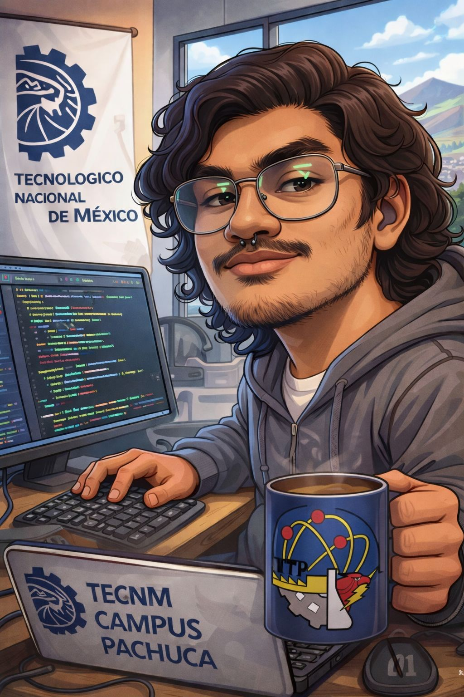

Sobre mí
Soy Daniel Ignacio Pedraza Martínez, estudiante de Ingeniería en Tecnologías de la Información y
Comunicaciones en el TecNM
Campus Pachuca, Hidalgo. Me apasiona la tecnología desde dos frentes: el software y el hardware, porque creo
que las mejores soluciones nacen cuando ambos mundos se combinan.
Soy una persona práctica, curiosa y orientada a resolver problemas reales. Me gusta aprender haciendo,
liderar proyectos y enfrentar retos que me obliguen a pensar diferente. No me conformo con entender la
teoría, necesito construirlo, probarlo y mejorarlo.
Mi camino apunta hacia el desarrollo backend y fullstack, la domótica y la informática forense, áreas donde
la tecnología tiene un impacto concreto en la vida de las personas. Cada proyecto que desarrollo es un paso
más hacia ese objetivo.

Formación Académica
- Ingeniería en Tecnologías de la Información y Comunicaciones
Tecnológico Nacional de México, Campus Pachuca
Agosto 2023 – Diciembre 2027 (en curso) | 6° semestre
Áreas de interés: Desarrollo backend, electrónica e informática forense. - Bachillerato Técnico — Mantenimiento Industrial
Centro de Estudios Científicos y Tecnológicos No. 16 (CECyT 16) — IPN
2019 – 2022 | 5 semestres cursados
Participación en el concurso "Proyecto Aula", desarrollando un proyecto de mejora de espacios con trabajo colaborativo. - Certificado de Bachillerato Certificado de Bachillerato ACREDITA BACH - CENEVAL 2023 — Certificación Externa 2023
Servicios Profesionales
- Desarrollo de Aplicaciones - Desarrollo de prototipos y aplicaciones básicas para móvil y backend. Con conocimientos en Java, C# y JavaScript, con experiencia práctica en el desarrollo de aplicaciones móviles multiplataforma con Expo y React Native.
- Desarrollo de Sistemas Embebidos e IoT - Programación y prototipado con microcontroladores ESP32 y Arduino, integración de sensores y componentes electrónicos para proyectos básicos de automatización y electrónica aplicada.
- Soporte Técnico y Mantenimiento - Conocimientos en computación, electricidad y electrónica básica, soldadura con cautín y manejo de herramientas técnicas adquiridos a través de formación técnica especializada.
- Comunicación en Inglés - Atención y comunicación en inglés a nivel B2 certificado, con capacidad para desenvolverse en entornos técnicos y profesionales en ese idioma.
Portafolio de Proyectos
- Sienna: Fashion Assistant Aplicación móvil multiplataforma desarrollada con Expo y React Native, diseñada como asistente de moda personal. Proyecto funcional desarrollado de forma colaborativa con enfoque en la experiencia de usuario. Repositorio en GitHub
- Foco Inteligente con ESP32 Sistema de iluminación inteligente basado en ESP32 con control remoto mediante página web desarrollada desde cero. Integración de LED RGB, sensor de audio para respuesta al ritmo del sonido y sensor de presencia para automatización.
- Sistema de Control de Acceso Bidireccional con ESP32 Sistema de acceso automatizado con autenticación mediante RFID para entrada y sensor ultrasónico para detección de salida. Incluye pantalla con mensajes de acceso permitido y denegado en tiempo real.
Experiencia y certificaciones
- AWS Academy Graduate — Cloud Foundations
Amazon Web Services (AWS Academy)
Septiembre 2025 - Cambridge B2 First (FCE)
Cambridge Assessment English
Junio 2025
Mis hobbies
- Jugar Videojuegos
- Programar en HTML, CSS y JavaScript
- Escuchar música
Mis paginas favoritas
Estas son mis paginas favoritas: